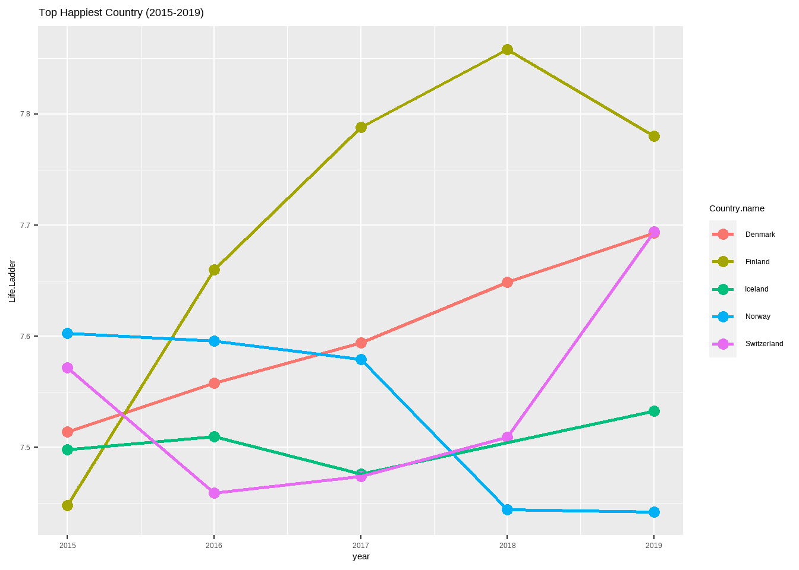
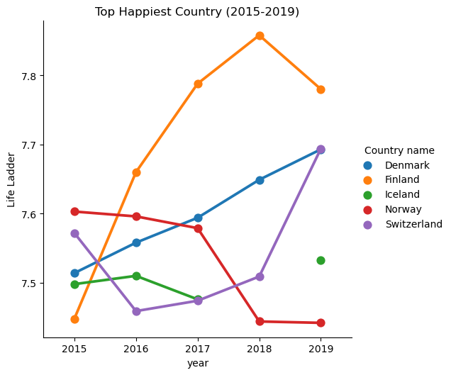

How does Finland become the happiest country
The World Happiness dataset contains six factors to measure global happiness: life expectancy, economics, social support, absence of corruption, freedom, and generosity. These factors were reported for 166 countries around the world from 2005 to 2020. In this Dotto, we want to find the top five happiest countries then plot the happiness rate for these countries from 2015 to 2019.
Mahyar Sharifi
Instructions:
In the first DOT, we import two packages: 1.dplyr: importing and wrangling dataset. 2.ggplot2: plotting a line-plot.
Then we import the World Happiness dataset and select rows for 2015 to 2019 for all countries.
In the first DOT, we import two packages: 1.pandas: importing and wrangling dataset. 2.seaborn: plotting a line-plot.
Then we import the World Happiness dataset and select rows for 2015 to 2019 for all countries.
Codes:
#load library
library(dplyr)
library(ggplot2)
#read world happiness dataset
path = 'Dataset/world-happiness-report.csv'
data <- read.csv(path,
fileEncoding = "UTF-8-BOM")
knitr::kable(sample_n(data, 5))
# Select Dataset from 2015-2019
data <- filter(data,
year %in% c(2015:2019))#Import Packages
import pandas as pd
import seaborn as sns
#read world happiness dataset
path = 'Dataset/world-happiness-report.csv'
data = pd.read_csv(path)
data.sample(5)
# Select Dataset from 2015-2019
data = data[data['year'].isin(range(2015, 2020))]Results:
| Country.name | year | Life.Ladder | Log.GDP.per.capita | Social.support | Healthy.life.expectancy.at.birth | Freedom.to.make.life.choices | Generosity | Perceptions.of.corruption | Positive.affect | Negative.affect |
|---|---|---|---|---|---|---|---|---|---|---|
| Greece | 2013 | 4.720 | 10.243 | 0.687 | 71.68 | 0.426 | -0.272 | 0.941 | 0.689 | 0.482 |
| Yemen | 2010 | 4.350 | 8.453 | 0.727 | 54.30 | 0.659 | -0.104 | 0.853 | 0.582 | 0.308 |
| Albania | 2009 | 5.485 | 9.262 | 0.833 | 66.20 | 0.525 | -0.158 | 0.864 | 0.640 | 0.279 |
| Denmark | 2014 | 7.508 | 10.862 | 0.956 | 71.28 | 0.942 | 0.118 | 0.237 | 0.832 | 0.233 |
| Latvia | 2020 | 6.229 | 10.300 | 0.928 | 67.40 | 0.820 | -0.078 | 0.809 | 0.714 | 0.202 |
## Country name year ... Positive affect Negative affect
## 1149 Mongolia 2019 ... 0.707 0.167
## 958 Latvia 2011 ... 0.563 0.222
## 201 Bosnia and Herzegovina 2016 ... 0.641 0.304
## 1609 Spain 2015 ... 0.732 0.285
## 1635 Swaziland 2018 ... 0.824 0.252
##
## [5 rows x 11 columns]Instructions:
After we select the dataset, the average of Life Ladder calculates for each country. Then the top five happiest countries will be identified by sorting the dataset by Life Ladder columns.
After we select the dataset, the average of Life Ladder calculates for each country. Then the top five happiest countries will be identified by sorting the dataset by Life Ladder columns.
Codes:
# Grouping Data by Country
data_grouped_country <- data %>%
group_by(Country.name) %>%
summarise(Mean.Life.Ladder =
mean(Life.Ladder))
# Sort the New data_grouped_country by Life Ladder column
happiest_country <- arrange(data_grouped_country, desc(Mean.Life.Ladder))
#Identify the five happiest country
as.vector(t(happiest_country[1:5, 1]))#Calculate Mean of Life Ladder for Each Country during 2015-2019
data_grouped_country = data.groupby('Country name').mean()
#Sort data_grouped by Life Ladder Column
sorted_data_country = data_grouped.sort_values(['Life Ladder'],
ascending = False)
#Identify the five happiest country
print(sorted_data.index[:5])Results:
## [1] "Finland" "Denmark" "Switzerland" "Norway" "Iceland"## Index(['Finland', 'Denmark', 'Switzerland', 'Norway', 'Iceland'], dtype='object', name='Country name')Instructions:
Finland, Denmark, Switzerland, Norway, and Iceland were identified as the happiest country in a row from 2015 to 2019. In this Dot, the new dataset will create for these countries which name is five_happiest. As we can see in the top-five dataset, Iceland has no information for 2018.
Finland, Denmark, Switzerland, Norway, and Iceland were identified as the happiest country in a row from 2015 to 2019. In this Dot, the new dataset will create for these countries which name is five_happiest. As we can see in the top-five dataset, Iceland has no information for 2018.
Codes:
# Select New Dataset for five Happiest Country
five_happiest = filter(data, Country.name %in%
as.vector(t(happiest_country[1:5,1])))# Select New Dataset for five Happiest Country
five_happiest = data[(data['Country name'].isin(sorted_data.index[:5]))]Results:
Instructions:
The final Dot is to plot the trend of Life Ladder from 2015 to 2019. The line plot shows that Finland has been increasing considerably and reached its peak in 2018.
For Switzerland and Denmark, we can see an increasing trend like Finland. On the other hand, Iceland has a slight fluctuation, and Norway has a decreasing trend in this period.
The final Dot is to plot the trend of Life Ladder from 2015 to 2019. The line plot shows that Finland has been increasing considerably and reached its peak in 2018.
For Switzerland and Denmark, we can see an increasing trend like Finland. On the other hand, Iceland has a slight fluctuation, and Norway has a decreasing trend in this period.
Codes:
# Plot a catplot for the top-5 Happiest Country
ggplot(data = five_happiest,
mapping = aes(x = year, y=Life.Ladder,
color=Country.name))+
geom_point(mapping = aes(),size=3)+
geom_line(mapping = aes())+
geom_path(size = 0.9)+
ggtitle('Top Happiest Country (2015-2019)')# Plot a catplot for the top-5 Happiest Country
sns.catplot(data = five_happiest,
x ='year',
y = 'Life Ladder',
hue ='Country name',
kind = 'point').set(title =
'Top Happiest Country (2015-2019)')Results:

